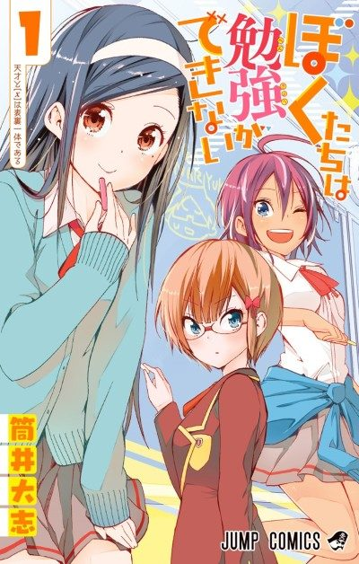
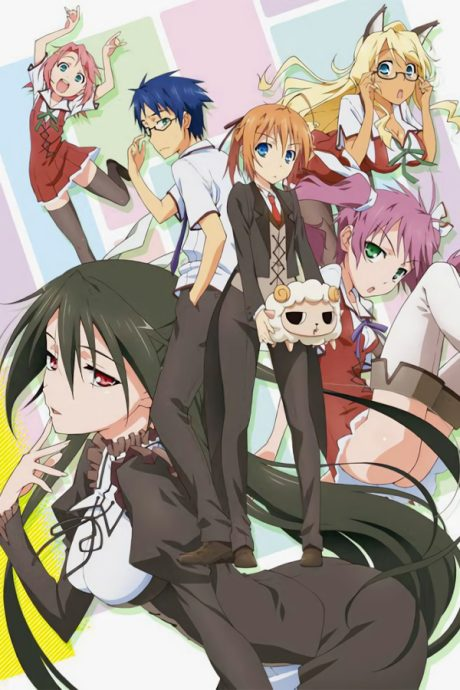
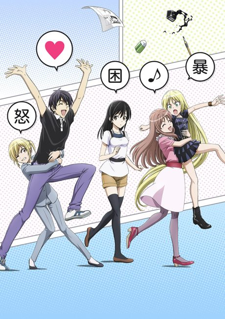

We Never Learn: BOKUBEN
ぼくたちは勉強ができない
Nariyuki, a hardworking student, is assigned to tutor two geniuses who want to study subjects they're bad at.
After the anime, read the manga from Chapter 70.
7.1AniList score
—Animeter, no votes yet
26episodes, 2 seasons
Rate it or report where you stopped
Filler
No filler: all 17 episodes are canon. Anime Filler List covers the first 17 of 26 episodes so far.
Episodes17
Canon17
Filler0
Mixed0
Sources: Anime Filler List
More like We Never Learn: BOKUBEN
 Unclear6.7
Unclear6.7
 Manga Vol. 56.3
Manga Vol. 56.3
 Unclear6.5
Unclear6.5
 Manga Ch. 907.1
Manga Ch. 907.1

Unclear6.9 Manga Ch. 486.9
Manga Ch. 486.9
Own end6.5
Negima! Unclear6.7
Unclear6.7
 VN7.1
VN7.1

Unclear6.7 Manga Vol. 56.8
Manga Vol. 56.8
 Manga Ch. 1077.3
Manga Ch. 1077.3